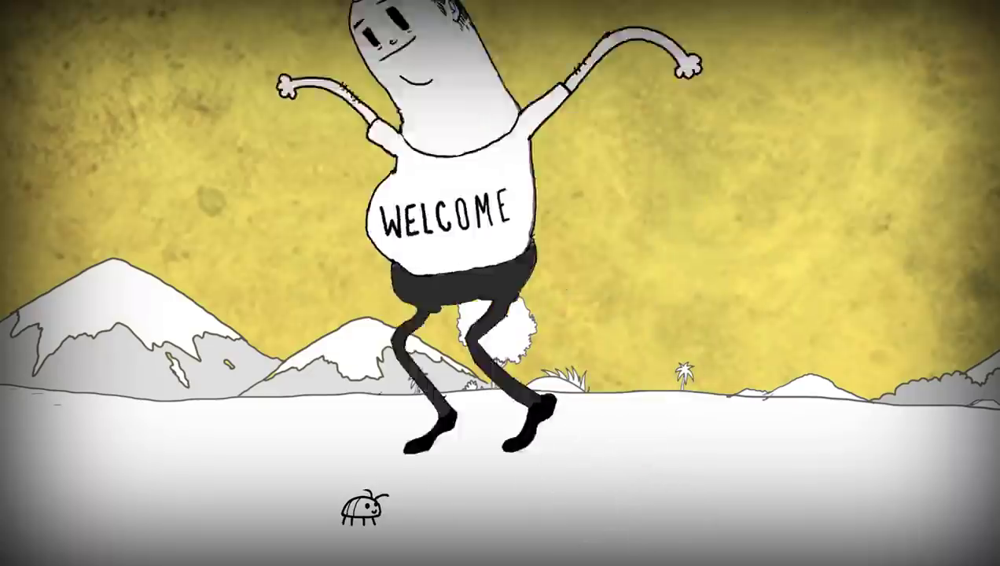

Homens e insetos
Na cena de abertura do vídeo, Man pula em cima de uma joaninha e a esmaga. Ele comemora a morte do inseto.
No mundo real, a humanidade nunca conseguiu controlar os insetos. Eles sempre foram mais fortes e resistentes do que nós humanos.
Convivemos com baratas, pernilongos e pulgas. Eles sempre estiveram e sempre estarão entre nós.
Alguns insetos podem nos machucar ou matar, outros são inofensivos. Alguns são lindos como uma joaninha. Devemos aprender essas diferenças e convider com elas.